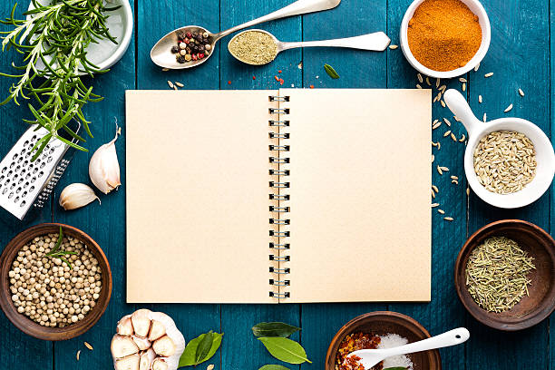

<!DOCTYPE html>

<html>
    <meta charset="utf-8">
    <title>Odin Recipes</title>
    <link rel="stylesheet" href="./style.css">
</html>

<body>

    <h1>Odin Recipes</h1>

    

    <p> Welcome to the <strong>Odin Recipes</strong> project website</p>

    <p> Currently There are a total of three <em>recipes</em> available right now. They are: </p>

    <ul>
        <li><a href="./recipes/dosa.html"> Masala Dosa </a></li>
        <li><a href="./recipes/ch_burger.html"> Chicken Burger </a></li>
        <li><a href="./recipes/ch_pizza.html"> Chicken Pizza </a></li>
    </ul>
    
    <p> Click on the links above to take you to the Recipe webpages</p>

</body>